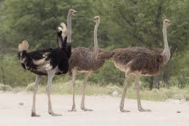

OSTRICH
The ostrich is the largest bird on Earth—and the fastest on two legs! Though it can’t fly, it can sprint at speeds up to 70 km/h. Native to Africa’s open landscapes, ostriches use their strong legs to run away from danger and can defend themselves with powerful kicks.
They eat plants, seeds, and insects, and their big eyes help them spot predators from far away. Ostriches live in groups, sometimes with zebras or antelopes, for extra protection.
DID YOU KNOW!
Ostriches can’t fly, but they sure can run! They have big eyes and strong legs. One kick from an ostrich can scare away a lion!